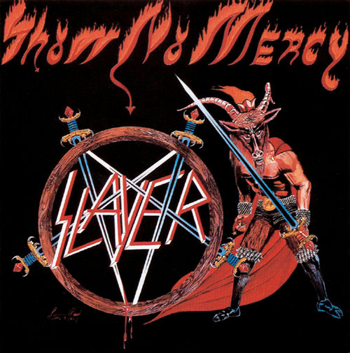
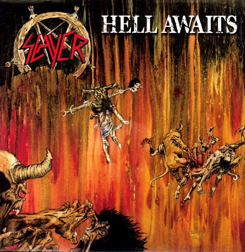
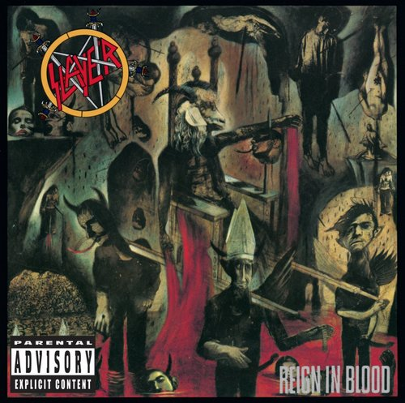

3 Slayer
Slayer es una banda de thrash metal estadounidense fundada en 1981 por los guitarristas Kerry King y Jeff Hanneman en Huntington Park, California. Para completar su formación, King y Hanneman reclutaron al bajista y vocalista de origen chileno Tom Araya y al baterista de origen cubano Dave Lombardo. Este último ha estado dentro y fuera de la banda durante varios años. Alcanzó la fama gracias a la edición de Reign in Blood, calificado como «el álbum más heavy1 de todos los tiempos» según la revista Kerrang!.2 Gracias a esta fama, el grupo fue incluido durante los años ochenta dentro de Los Cuatro grandes del thrash metal junto con Metallica, Megadeth y Anthrax.
Integrantes Actuales: Tom Araya, Kerry King, Paul Bostaph, Gary Holt.
Top Albums

Show No Mercy

hell Awaits

Reign In Blood